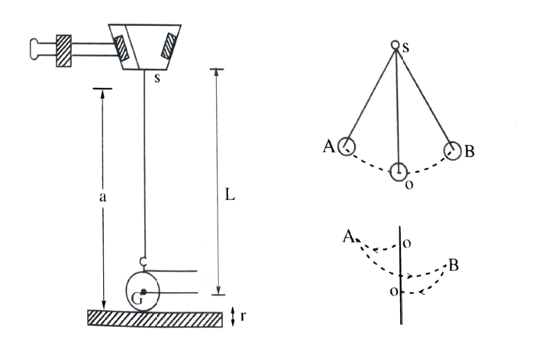
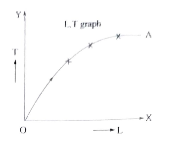

To determine acceleration due to gravity 'g' at a place and to determine the percentage error in the value of 'g'
simple pendulum,stp clock,meter scale,vernier caliperse and a pointer
The distance between the point of suspension 's' and the centerbof gravity of the bob 'o' is called length of pendullum L. When the pendullum is pulled to a side and released it begins to oscillate due to restoring force ''mgsine\(\Theta \)''. The time taken for one ossillation is called the time period T. \(L\alpha t^{2}\)
The acceleration due to gravity(g) is calculated,by using the formula \(g=4\pi ^{2}\frac{L}{T^{2}}\, m/s^{2}\)
An ideal simple pendulum is a heavy point mass suspended by massless,inextensible and torsionless string. But in practice it is not possible to realise it.A heavy bob suspended by a light inextensible string is taken as a simple pendulum. One end of the string is tied to the sphere and the other end passes between the two parts of a split cork held firmly by a clamp of the retort stand.The bottom of the split cork acts as point of suspension 's'.With the arrangement the length betwen S and the centre of gravith of the bob can be changed..Thus changing the length of pendulum.

Measure the diameter of the bob 4 or 5 timesin different directions
with vernier caliperse and calculate the average diamter 'd'.Then the
radius of the bob=\(r=\frac{d}{2}\)
Keeping a wooden block beneath the bob such that it just touches the
bottom of the bob,measure the distance ''a'' with the meter scale from
the point of suspension S to the bottom of the bob.The length of the
distance ''a'' with the meter scale from the point of suspension S to
the bottom of the bob.The length of the pendullum L=(a-r)cm.By
adjusting ''a'' the length of the pendullum 'L'is kept at a desired
value.
Adjust the length of the pendullum to 50cm.Draw the bob to a side through a small distance and then release. it begins to oscillate about its mean position O in the vertical plane, keep a pointer at O to note the number of compllete osillations.Start the stop clock while the bob is passing O towards left (or right). The 20 oscillations- Similarly not the time't2' fo 20 oscillations for the second time.The average time't' is calculaed.Then the time period \(T=\frac{t}{20}\)
Repeat the experiment for the different length 60cm,70cm,80cm,90cm, and 100cm and tabulate the readings. The time period is calculated in each case.The values of L/t2 are calculated in each case.The average value of L/T2 is calculated.Using the formula \(g=4\pi ^{2}.\frac{L}{T^{2}}\).'g' is calculated.
where\((\Delta g)\) is the difference in the standard value and the experiment value of 'g'. is called absolute error.
A graph is drawn between L on the X-axis and T2 on the
Y-axis. The graph is astraight passing through the orgin.From
graph,the value of L/T2 and hence 'g' is calcuLted, using
the formula \(g=4\pi ^{2}\frac{L}{T^{2}}\)
As the period of second pendulum is 2 second, the corresponding length
for 4 is obtained from graph.
This length gives the length of second pendulum
A graph is drawn between the values of L on th x-axis and the value of T on the Y-axis.The graph is a parabola as shown in the figure.
